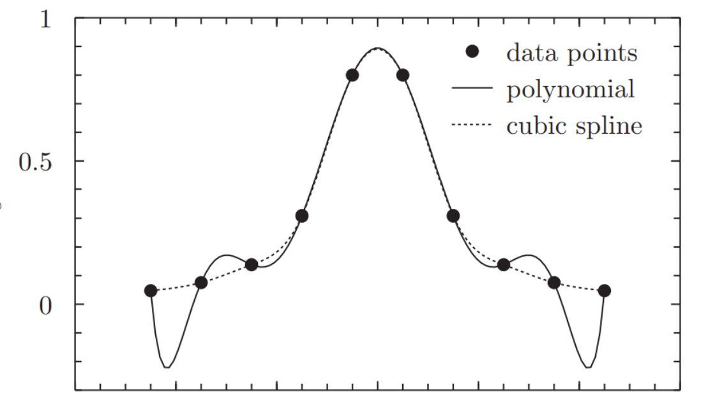
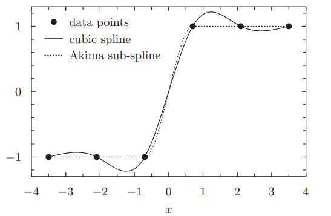

13 1.1 Interpolasi
Dalam praktiknya, seseorang sering kali menemui situasi di mana fungsi yang menjadi perhatian, \(f(x)\), hanya direpresentasikan oleh sekumpulan titik-titik tabel yang diskrit,
\[\{x_i, y_i = f(x_i) \mid i = 1 \ldots n\},\]
yang diperoleh, misalnya, melalui pengambilan sampel, eksperimen, atau perhitungan numerik yang ekstensif.
Interpolasi berarti membangun sebuah fungsi (yang mulus), yang disebut fungsi interpolasi atau interpolan, yang melalui secara tepat titik-titik yang diberikan dan (diharapkan) mengaproksimasi fungsi tabel di antara titik-titik tabel tersebut. Interpolasi adalah kasus khusus dari penyesuaian kurva (curve fitting) di mana fungsi yang disesuaikan harus melalui secara tepat titik-titik data.
Fungsi interpolasi dapat digunakan untuk berbagai kebutuhan praktis seperti mengestimasi fungsi tabel di antara titik-titik tabel dan mengestimasi turunan serta integral yang melibatkan fungsi tabel tersebut.
1.2 Interpolasi Polinomial
Interpolasi polinomial menggunakan sebuah polinomial sebagai fungsi interpolasi. Diberikan sebuah tabel berisi \(n\) titik, \(\{x_i, y_i\}\), di mana tidak ada dua \(x_i\) yang sama, seseorang dapat membangun sebuah polinomial \(P(x)\) berorde \(n-1\) yang melalui secara tepat titik-titik tersebut: \(P(x_i) = y_i\). Polinomial ini dapat ditulis secara intuitif dalam bentuk Lagrange,
\[P(x) = \sum_{i=1}^{n} y_i \prod_{\substack{k=1 \\ k \neq i}}^{n} \frac{x - x_k}{x_i - x_k}. \quad (1)\]
Polinomial interpolasi Lagrange selalu ada dan bersifat unik.
Polinomial interpolasi berorde tinggi rentan terhadap fenomena Runge: osilasi liar di dekat titik-titik ujung interval, lihat Gambar 1.
import numpy as np
def polinterp(n, x, y, z):
"""
Interpolasi Lagrange.
Parameters:
n : int -> jumlah titik data
x : array-like -> array nilai x (absis)
y : array-like -> array nilai y (ordinat)
z : float -> titik yang ingin diinterpolasi
Returns:
s : float -> hasil interpolasi pada titik z
"""
s = 0.0
for i in range(n):
p = 1.0
for k in range(n):
if k != i:
p *= (z - x[k]) / (x[i] - x[k])
s += y[i] * p
return s
# Contoh penggunaan
if __name__ == "__main__":
x = np.array([1, 2, 3, 4])
y = np.array([1, 4, 9, 16]) # y = x^2
z = 2.5
hasil = polinterp(len(x), x, y, z)
print(f"Hasil interpolasi pada z={z} adalah {hasil}")
Gambar 1: Polinomial interpolasi Lagrange, garis penuh, menunjukkan fenomena Runge: osilasi besar pada ujung-ujung. Sebagai perbandingan, garis putus-putus menunjukkan sebuah spline kubik.
Contoh
Data 4 titik \((x_i, y_i)\):
- \((x_1, y_1) = (1, 1)\)
- \((x_2, y_2) = (2, 4)\)
- \((x_3, y_3) = (3, 9)\)
- \((x_4, y_4) = (4, 16)\)
2. Rumus Polinomial Lagrange
Berdasarkan rumus di gambar pertama, untuk \(n = 4\):
\[P(x) = y_1 L_1(x) + y_2 L_2(x) + y_3 L_3(x) + y_4 L_4(x)\]
Hitung setiap suku basis \(L_i(x)\) terlebih dahulu:
- Suku \(L_1(x)\) (untuk \(i=1\)):
\[L_1(x) = \frac{(x - x_2)(x - x_3)(x - x_4)}{(x_1 - x_2)(x_1 - x_3)(x_1 - x_4)} = \frac{(x - 2)(x - 3)(x - 4)}{(1 - 2)(1 - 3)(1 - 4)} = \frac{(x - 2)(x - 3)(x - 4)}{-6}\]
- Suku \(L_2(x)\) (untuk \(i=2\)):
\[L_2(x) = \frac{(x - x_1)(x - x_3)(x - x_4)}{(x_2 - x_1)(x_2 - x_3)(x_2 - x_4)} = \frac{(x - 1)(x - 3)(x - 4)}{(2 - 1)(2 - 3)(2 - 4)} = \frac{(x - 1)(x - 3)(x - 4)}{2}\]
- Suku \(L_3(x)\) (untuk \(i=3\)):
\[L_3(x) = \frac{(x - x_1)(x - x_2)(x - x_4)}{(x_3 - x_1)(x_3 - x_2)(x_3 - x_4)} = \frac{(x - 1)(x - 2)(x - 4)}{(3 - 1)(3 - 2)(3 - 4)} = \frac{(x - 1)(x - 2)(x - 4)}{-2}\]
- Suku \(L_4(x)\) (untuk \(i=4\)):
\[L_4(x) = \frac{(x - x_1)(x - x_2)(x - x_3)}{(x_4 - x_1)(x_4 - x_2)(x_4 - x_3)} = \frac{(x - 1)(x - 2)(x - 3)}{(4 - 1)(4 - 2)(4 - 3)} = \frac{(x - 1)(x - 2)(x - 3)}{6}\]
3. Menyusun Persamaan Akhir \(P(x)\)
Masukkan nilai \(y_i\) masing-masing ke dalam rumus utama:
\[P(x) = 1 \cdot \left[ \frac{(x-2)(x-3)(x-4)}{-6} \right] + 4 \cdot \left[ \frac{(x-1)(x-3)(x-4)}{2} \right] + 9 \cdot \left[ \frac{(x-1)(x-2)(x-4)}{-2} \right] + 16 \cdot \left[ \frac{(x-1)(x-2)(x-3)}{6} \right]\]
Karena data \(y\) merupakan kuadrat dari \(x\) (\(1^2=1, 2^2=4, 3^2=9, 4^2=16\)), jika disederhanakan aljabar di atas, fungsi ini akan tereduksi menjadi fungsi kuadrat sempurna:
\[P(x) = x^2\]
Contoh Uji Coba Nilai (Misal mencari nilai di \(x = 2.5\))
Jika kita ingin memprediksi nilai \(y\) saat \(x = 2.5\):
- \(L_1(2.5) = \frac{(0.5)(-0.5)(-1.5)}{-6} = \frac{0.375}{-6} = -0.0625\)
- \(L_2(2.5) = \frac{(1.5)(-0.5)(-1.5)}{2} = \frac{1.125}{2} = 0.5625\)
- \(L_3(2.5) = \frac{(1.5)(0.5)(-1.5)}{-2} = \frac{-1.125}{-2} = 0.5625\)
- \(L_4(2.5) = \frac{(1.5)(0.5)(-0.5)}{6} = \frac{-0.375}{6} = -0.0625\)
\[P(2.5) = 1(-0.0625) + 4(0.5625) + 9(0.5625) + 16(-0.0625)\]
\[P(2.5) = -0.0625 + 2.25 + 5.0625 - 1 = 6.25\]
1.3 Interpolasi Spline
Interpolasi spline menggunakan sebuah polinomial sepotong-sepotong (piecewise polynomial), \(S(x)\), yang disebut spline, sebagai fungsi interpolasi,
\[S(x) = S_i(x) \text{ jika } x \in [x_i, x_{i+1}] \big|_{i=1,\ldots,n-1}, \quad (2)\]
di mana \(S_i(x)\) adalah polinomial dengan orde tertentu \(k\). Interpolasi spline menghindari masalah fenomena Runge. Pada awalnya, “spline” adalah istilah untuk penggaris elastis yang dibengkokkan untuk melewati sejumlah titik yang telah ditentukan. Alat ini digunakan untuk membuat gambar teknik secara manual.
Spline dengan orde \(k \ge 1\) dapat dibuat kontinu pada titik-titik tabel,
\[S_i(x_i) = y_i, \ S_i(x_{i+1}) = y_{i+1} \ \Big|_{i=1,\dots,n-1}, \quad (3)\]
bersama dengan \(k-1\) turunannya,
\[ \left. \begin{array}{l} S'_i(x_{i+1}) = S'_{i+1}(x_{i+1}), \\ S''_i(x_{i+1}) = S''_{i+1}(x_{i+1}), \\ \quad \vdots \\ S^{(k-1)}_i(x_{i+1}) = S^{(k-1)}_{i+1}(x_{i+1}). \end{array} \right| i=1,\dots,n-2 \quad (4) \]
Kondisi kontinuitas (3) dan (4) membentuk \(kn + n - 2k\) persamaan linear untuk \((n-1)(k+1) = kn + n - k - 1\) koefisien dari \(n-1\) polinomial (2) berorde \(k\). Kondisi \(k-1\) yang hilang dapat dipilih secara (wajar) sembarang.
Yang paling populer adalah spline kubik, di mana polinomial \(S_i(x)\) berorde tiga. Spline kubik adalah fungsi kontinu beserta turunan pertama dan keduanya. Spline kubik memiliki fitur bagus yaitu (sejenis) meminimalkan total kelengkungan fungsi interpolasi. Hal ini membuat spline kubik terlihat bagus.
Spline kuadrat—kontinu dengan turunan pertama—hampir tidak sebaik spline kubik dalam sebagian besar hal. Secara khusus, spline ini dapat berosilasi secara tidak wajar ketika perubahan cepat pada fungsi tabel diikuti oleh periode di mana fungsi tersebut hampir konstan. Spline kubik agak lebih kebal terhadap osilasi semacam itu.Spline linear hanyalah sebuah poligon yang digambar melalui titik-titik tabel.
1.3.1 Interpolasi linear
Interpolasi linear adalah spline dengan polinomial linear. Kondisi kontinuitas (3) dapat dipenuhi dengan memilih spline dalam bentuk (intuitif)
\[S_i(x) = y_i + p_i(x - x_i) \, , \quad (5)\]
di mana
\[p_i = \frac{\Delta y_i}{\Delta x_i} \ , \ \Delta y_i \doteq y_{i+1} - y_i \ , \ \Delta x_i \doteq x_{i+1} - x_i \ . \quad (6)\]
Perhatikan bahwa pencarian interval \([x_i \le x \le x_{i+1}]\) dalam array terurut \(\{x_i\}\) harus dilakukan dengan algoritma pencarian biner (juga disebut pencarian setengah interval): titik \(x\) dibandingkan dengan elemen tengah array, jika nilainya kurang dari elemen tengah, algoritma mengulangi aksinya pada sub-array di sebelah kiri elemen tengah, jika lebih besar, pada sub-array di sebelah kanan. Ketika sub-array yang tersisa direduksi menjadi dua elemen, interval tersebut ditemukan. Jumlah operasi rata-rata untuk pencarian biner adalah \(O(\log n)\).
def linterp(n, x, y, z):
"""
Interpolasi linear menggunakan binary search untuk mencari interval.
Parameters:
n : int -> jumlah titik data
x : array-like -> array nilai x (absis), harus terurut naik
y : array-like -> array nilai y (ordinat)
z : float -> titik yang ingin diinterpolasi
Returns:
float -> hasil interpolasi pada titik z
Precondition:
n > 1 dan x[0] <= z <= x[n-1]
"""
assert n > 1 and z >= x[0] and z <= x[n - 1]
i, j = 0, n - 1 # binary search
while j - i > 1:
m = (i + j) // 2
if z > x[m]:
i = m
else:
j = m
return y[i] + (y[i + 1] - y[i]) / (x[i + 1] - x[i]) * (z - x[i])
# Contoh penggunaan
if __name__ == "__main__":
x = [0, 1, 2, 3, 4]
y = [0, 1, 4, 9, 16] # y = x^2 (contoh data)
z = 2.5
hasil = linterp(len(x), x, y, z)
print(f"Hasil interpolasi linear pada z={z} adalah {hasil}")1.3.2 Spline kuadrat
Spline kuadrat tersusun dari polinomial orde dua, yang mudah ditulis dalam bentuk
\[S_i(x) = y_i + p_i(x - x_i) + c_i(x - x_i)(x - x_{i+1}) \Big|_{i=1,\dots,n-1} \, , \quad (7)\]
yang secara identik memenuhi kondisi kontinuitas
\[S_i(x_i) = y_i \, , \, S_i(x_{i+1}) = y_{i+1} \ \Big|_{i=1,\dots,n-1} \, . \quad (8)\]
Mensubstitusikan (7) ke dalam kondisi kontinuitas turunan,
\[S'_i(x_{i+1}) = S'_{i+1}(x_{i+1}) \ \Big|_{i=1,\dots,n-2} \, ; \quad (9)\]
menghasilkan \(n-2\) persamaan untuk \(n-1\) koefisien \(c_i\) yang tidak diketahui,
\[p_i + c_i \Delta x_i = p_{i+1} - c_{i+1} \Delta x_{i+1} \ \Big|_{i=1,\dots,n-2} \, . \quad (10)\]
Satu koefisien dapat dipilih secara sembarang, misalnya \(c_1 = 0\). Koefisien lainnya sekarang dapat dihitung secara rekursif dari (10),
\[c_{i+1} = \frac{1}{\Delta x_{i+1}} (p_{i+1} - p_i - c_i \Delta x_i) \ \Big|_{i=1,\dots,n-2} \, . \quad (11)\]
Sebagai alternatif, seseorang dapat memilih \(c_{n-1} = 0\) dan melakukan rekursi mundur
\[c_i = \frac{1}{\Delta x_i} (p_{i+1} - p_i - c_{i+1} \Delta x_{i+1}) \ \Big|_{i=n-2,\dots,1} \, . \quad (12)\]
Dalam praktiknya, kecuali Anda mengetahui nilai \(c_1\) (atau \(c_{n-1}\)) Anda, lebih baik menjalankan kedua rekursi dan kemudian merata-ratakan nilai \(c\) yang dihasilkan. Ini setara dengan pertama-tama menjalankan rekursi maju dari \(c_1 = 0\) dan kemudian rekursi mundur dari \(\frac{1}{2}c_{n-1}\).
Bentuk optimal (7) dari spline kuadrat juga dapat ditulis dalam bentuk biasa yang cocok untuk diferensiasi dan integrasi,
\[S_i(x) = y_i + b_i(x - x_i) + c_i(x - x_i)^2, \text{ di mana } b_i = p_i - c_i \Delta x_i \, . \quad (13)\]
Sebuah implementasi spline kuadrat dalam C tercantum dalam Tabel 3
class QSpline:
"""
Spline kuadratik: menyimpan titik data (x, y) dan koefisien b, c
untuk interpolasi polinomial kuadratik piecewise.
"""
def __init__(self, n, x, y):
# builds quadratic spline
self.n = n
self.x = list(x) # copy of x_i
self.y = list(y) # copy of y_i
self.b = [0.0] * (n - 1)
self.c = [0.0] * (n - 1)
p = [0.0] * (n - 1)
h = [0.0] * (n - 1)
for i in range(n - 1):
h[i] = x[i + 1] - x[i]
p[i] = (y[i + 1] - y[i]) / h[i]
# recursion up:
self.c[0] = 0
for i in range(n - 2):
self.c[i + 1] = (p[i + 1] - p[i] - self.c[i] * h[i]) / h[i + 1]
self.c[n - 2] /= 2
# recursion down:
for i in range(n - 3, -1, -1):
self.c[i] = (p[i + 1] - p[i] - self.c[i + 1] * h[i + 1]) / h[i]
for i in range(n - 1):
self.b[i] = p[i] - self.c[i] * h[i]
def eval(self, z):
"""Evaluates s(z)"""
assert z >= self.x[0] and z <= self.x[self.n - 1]
i, j = 0, self.n - 1 # binary search
while j - i > 1:
m = (i + j) // 2
if z > self.x[m]:
i = m
else:
j = m
h = z - self.x[i]
return self.y[i] + h * (self.b[i] + h * self.c[i]) # interpolating polynomial
# Contoh penggunaan
if __name__ == "__main__":
x = [0, 1, 2, 3, 4]
y = [0, 1, 4, 9, 16] # y = x^2
spline = QSpline(len(x), x, y)
z = 2.5
hasil = spline.eval(z)
print(f"Hasil interpolasi spline kuadratik pada z={z} adalah {hasil}")
# tidak perlu qspline_free() -> Python otomatis membersihkan memori1.3.3 Spline kubik
Spline kubik tersusun dari polinomial orde tiga,
\[S_i(x) = y_i + b_i(x - x_i) + c_i(x - x_i)^2 + d_i(x - x_i)^3 \, . \quad (14)\]
Bentuk ini secara otomatis memenuhi setengah bagian pertama dari kondisi kontinuitas (3): \(S_i(x_i) = y_i\). Setengah bagian kedua dari kondisi kontinuitas (3), \(S_i(x_{i+1}) = y_{i+1}\), dan kontinuitas turunan pertama dan kedua (4) memberikan sekumpulan persamaan,
\[ \begin{aligned} y_i + b_i h_i + c_i h_i^2 + d_i h_i^3 &= y_{i+1}, \ i = 1, \dots, n-1 \\ b_i + 2c_i h_i + 3d_i h_i^2 &= b_{i+1}, \ i = 1, \dots, n-2 \\ 2c_i + 6d_i h_i &= 2c_{i+1}, \ i = 1, \dots, n-2 \end{aligned} \quad (15) \]
di mana \(h_i \doteq x_{i+1} - x_i\).
Himpunan persamaan (15) merupakan sekumpulan \(3n-5\) persamaan linear untuk \(3(n-1)\) koefisien yang tidak diketahui \(\{a_i, b_i, c_i \mid i = 1, \dots, n-1\}\). Oleh karena itu, dua persamaan lagi harus ditambahkan ke dalam himpunan tersebut untuk mencari koefisien-koefisiennya. Jika kedua persamaan tambahan tersebut juga linear, maka total sistem menjadi linear dan dapat dengan mudah diselesaikan.
Spline disebut natural jika kondisi tambahan diberikan sebagai turunan kedua yang bernilai nol pada titik-titik ujung,
\[S''(x_1) = S''(x_n) = 0 \, , \quad (16)\]
yang memberikan
\[ \begin{aligned} c_1 &= 0 \, , \\ c_{n-1} + 3d_{n-1}h_{n-1} &= 0 \, . \end{aligned} \quad (17) \]
Menyelesaikan dua persamaan pertama dalam (15) untuk \(c_i\) dan \(d_i\) memberikan\(^1\)
\[ \begin{aligned} c_i h_i &= -2b_i - b_{i+1} + 3p_i \, , \\ d_i h_i^2 &= b_i + b_{i+1} - 2p_i \, , \end{aligned} \quad (18) \]
di mana \(p_i \doteq \frac{\Delta y_i}{h_i}\). Kondisi natural (17) dan persamaan ketiga dalam (15) kemudian menghasilkan sistem tridiagonal berikut yang terdiri dari \(n\) persamaan linear untuk \(n\) koefisien \(b_i\),
\[ \begin{aligned} 2b_1 + b_2 &= 3p_1 \, , \\ b_i + \left(2\frac{h_i}{h_{i+1}} + 2\right) b_{i+1} + \frac{h_i}{h_{i+1}} b_{i+2} &= 3\left(p_i + p_{i+1}\frac{h_i}{h_{i+1}}\right) \Bigg|_{i=1,\dots,n-2} \, , \\ b_{n-1} + 2b_n &= 3p_{n-1} \, , \end{aligned} \quad (19) \]
atau, dalam bentuk matriks,
\[ \begin{pmatrix} D_1 & Q_1 & 0 & 0 & \cdots \\ 1 & D_2 & Q_2 & 0 & \cdots \\ 0 & 1 & D_3 & Q_3 & \cdots \\ \vdots & \vdots & \ddots & \ddots & \ddots \\ \cdots & \cdots & 0 & 1 & D_n \end{pmatrix} \begin{pmatrix} b_1 \\ \vdots \\ \vdots \\ \vdots \\ b_n \end{pmatrix} = \begin{pmatrix} B_1 \\ \vdots \\ \vdots \\ \vdots \\ B_n \end{pmatrix} \quad (20) \]
di mana elemen-elemen \(D_i\) pada diagonal utama adalah
di mana elemen-elemen \(D_i\) pada diagonal utama adalah
\[D_1 = 2, \ D_{i+1} = 2\frac{h_i}{h_{i+1}} + 2 \ \Big|_{i=1,\dots,n-2}, \ D_n = 2 \ , \quad (21)\]
elemen-elemen \(Q_i\) pada diagonal di atas diagonal utama adalah
\[Q_1 = 1, \ Q_{i+1} = \frac{h_i}{h_{i+1}} \ \Big|_{i=1,\dots,n-2} \ , \quad (22)\]
dan suku-suku ruas kanan \(B_i\) adalah
\[B_1 = 3p_1, \ B_{i+1} = 3\left(p_i + p_{i+1}\frac{h_i}{h_{i+1}}\right) \ \Big|_{i=1,\dots,n-2}, B_n = 3p_{n-1} \ . \quad (23)\]
Sistem ini dapat diselesaikan dengan satu kali eliminasi Gauss dan kemudian satu kali substitusi mundur. Setelah satu kali eliminasi Gauss, sistem menjadi
\[ \begin{pmatrix} \tilde{D}_1 & Q_1 & 0 & 0 & \cdots \\ 0 & \tilde{D}_2 & Q_2 & 0 & \cdots \\ 0 & 0 & \tilde{D}_3 & Q_3 & \cdots \\ \vdots & \vdots & \ddots & \ddots & \ddots \\ \cdots & \cdots & 0 & 0 & \tilde{D}_n \end{pmatrix} \begin{pmatrix} b_1 \\ \vdots \\ \vdots \\ \vdots \\ b_n \end{pmatrix} = \begin{pmatrix} \tilde{B}_1 \\ \vdots \\ \vdots \\ \vdots \\ \tilde{B}_n \end{pmatrix} , \quad (24) \]
di mana
\[\tilde{D}_1 = D_1, \ \tilde{D}_i = D_i - Q_{i-1}/\tilde{D}_{i-1} \ \Big|_{i=2,\dots,n} \ , \quad (25)\]
dan
\[ \tilde{B}_1 = B_1 \, , \, \tilde{B}_i = B_i - \tilde{B}_{i-1}/\tilde{D}_{i-1} \ \Big|_{i=2,\dots,n} \, . \quad (26) \]
Sistem segitiga (24) dapat diselesaikan dengan satu kali substitusi mundur,
\[ b_n = \tilde{B}_n/\tilde{D}_n \, , \, b_i = (\tilde{B}_i - Q_i b_{i+1})/\tilde{D}_i \ \Big|_{i=n-1,\dots,1} \, . \quad (27) \]
Sebuah implementasi python dari spline kubik tercantum dalam Tabel 4.
Table 4: Cubic spline
class CubicSpline:
"""
Natural cubic spline: interpolasi kubik piecewise dengan
kontinuitas turunan pertama dan kedua di setiap titik.
"""
def __init__(self, n, x, y):
# builds natural cubic spline
self.n = n
self.x = list(x)
self.y = list(y)
h = [0.0] * (n - 1) # VLA
for i in range(n - 1):
h[i] = x[i + 1] - x[i]
assert h[i] > 0
p = [0.0] * (n - 1)
for i in range(n - 1):
p[i] = (y[i + 1] - y[i]) / h[i]
# building the tridiagonal system:
D = [0.0] * n
Q = [0.0] * (n - 1)
B = [0.0] * n
D[0] = 2
for i in range(n - 2):
D[i + 1] = 2 * h[i] / h[i + 1] + 2
D[n - 1] = 2
Q[0] = 1
for i in range(n - 2):
Q[i + 1] = h[i] / h[i + 1]
for i in range(n - 2):
B[i + 1] = 3 * (p[i] + p[i + 1] * h[i] / h[i + 1])
B[0] = 3 * p[0]
B[n - 1] = 3 * p[n - 2]
# Gauss elimination:
for i in range(1, n):
D[i] -= Q[i - 1] / D[i - 1]
B[i] -= B[i - 1] / D[i - 1]
# back-substitution:
self.b = [0.0] * n
self.b[n - 1] = B[n - 1] / D[n - 1]
for i in range(n - 2, -1, -1):
self.b[i] = (B[i] - Q[i] * self.b[i + 1]) / D[i]
self.c = [0.0] * (n - 1)
self.d = [0.0] * (n - 1)
for i in range(n - 1):
self.c[i] = (-2 * self.b[i] - self.b[i + 1] + 3 * p[i]) / h[i]
self.d[i] = (self.b[i] + self.b[i + 1] - 2 * p[i]) / h[i] / h[i]
def eval(self, z):
assert z >= self.x[0] and z <= self.x[self.n - 1]
# binary search for the interval for z:
i, j = 0, self.n - 1
while j - i > 1:
m = (i + j) // 2
if z > self.x[m]:
i = m
else:
j = m
# calculate the interpolating spline:
h = z - self.x[i]
return self.y[i] + h * (self.b[i] + h * (self.c[i] + h * self.d[i]))
# Contoh penggunaan
if __name__ == "__main__":
x = [0, 1, 2, 3, 4]
y = [0, 1, 4, 9, 16] # y = x^2
spline = CubicSpline(len(x), x, y)
z = 2.5
hasil = spline.eval(z)
print(f"Hasil interpolasi cubic spline pada z={z} adalah {hasil}")
# tidak perlu cubic_spline_free() -> Python otomatis membersihkan memori1.3.4 Interpolasi sub-spline Akima
Akima sub-spline [?] adalah fungsi interpolasi dalam bentuk polinomial kubik sepotong-sepotong (piecewise cubic polynomial), mirip dengan spline kubik,
\[ \mathcal{A}(x)\Big|_{x \in [x_i, x_{i+1}]} = a_i + b_i(x - x_i) + c_i(x - x_i)^2 + d_i(x - x_i)^3 \doteq A_i(x) \, . \quad (28) \]
Namun, tidak seperti spline kubik, Akima sub-spline tidak mensyaratkan diferensiabilitas maksimal dari spline—dalam hal ini, kontinuitas turunan kedua—oleh karena itu dinamakan sub-spline. Alih-alih mencapai maksimal diferensiabilitas, sub-spline Akima berusaha mengurangi osilasi yang biasanya rentan dialami oleh spline biasa (lihat Gambar 2).
Pertama-tama, perhatikan bahwa koefisien \(\{a_i, b_i, c_i, d_i\}\) dalam persamaan (28) ditentukan oleh nilai turunan \(\mathcal{A}'_i \doteq \mathcal{A}'(x_i)\) dari sub-spline melalui kondisi kontinuitas untuk sub-spline dan turunan pertamanya,

Gambar 2: Sebuah spline kubik (garis penuh) menunjukkan osilasi yang khas, dibandingkan dengan Akima sub-spline (garis putus-putus) di mana osilasi tersebut pada dasarnya telah dihilangkan.
\[A_i(x_i) = y_i, \ A'_i(x_i) = \mathcal{A}'_i, \ A_i(x_{i+1}) = y_{i+1}, \ A'_i(x_{i+1}) = \mathcal{A}'_{i+1}. \quad (29)\]
Memang, dengan menyisipkan (28) ke dalam (29) dan menyelesaikan untuk koefisien-koefisiennya diperoleh
\[a_i = y_i, \ b_i = \mathcal{A}'_i, \ c_i = \frac{3p_i - 2\mathcal{A}'_i - \mathcal{A}'_{i+1}}{\Delta x_i}, \ d_i = \frac{\mathcal{A}'_i + \mathcal{A}'_{i+1} - 2p_i}{(\Delta x_i)^2}, \quad (30)\]
di mana \(p_i \doteq \Delta y_i / \Delta x_i, \ \Delta y_i \doteq y_{i+1} - y_i, \ \Delta x_i \doteq x_{i+1} - x_i\).
Dalam spline kubik biasa, turunan \(\mathcal{A}'_i\) ditentukan oleh kondisi kontinuitas turunan kedua dari spline. Sub-spline tidak memerlukan kondisi kontinuitas ini dan sebaliknya dapat menggunakan turunan sebagai parameter bebas yang dipilih untuk memenuhi kondisi lain.
Akima menyarankan untuk meminimalkan osilasi dengan memilih turunan sebagai kombinasi linear dari kemiringan terdekat,
\[\mathcal{A}'_i = \frac{w_{i+1}p_{i-1} + w_{i-1}p_i}{w_{i+1} + w_{i-1}}, \quad \text{jika} \quad w_{i+1} + w_{i-1} \neq 0, \quad (31)\]
\[\mathcal{A}'_i = \frac{p_{i-1} + p_i}{2}, \quad \text{jika} \quad w_{i+1} + w_{i-1} = 0, \quad (32)\]
di mana bobot \(w_i\) diberikan sebagai
\[w_i = |p_i - p_{i-1}|. \quad (33)\]
Idenya adalah jika tiga titik terletak dekat dengan sebuah garis, sub-spline di sekitar ini harus dekat dengan garis tersebut. Dengan kata lain, jika \(|p_i - p_{i-1}|\) kecil, turunan di sekitarnya harus dekat dengan \(p_i\).
Dua titik pertama dan dua titik terakhir memerlukan ketentuan khusus, misalnya (secara naif) seseorang dapat cukup menggunakan
\[\mathcal{A}'_1 = p_1, \ \mathcal{A}'_2 = \frac{1}{2}p_1 + \frac{1}{2}p_2, \ \mathcal{A}'_n = p_{n-1}, \ \mathcal{A}'_{n-1} = \frac{1}{2}p_{n-1} + \frac{1}{2}p_{n-2}. \quad (34)\]
Tabel (5) menunjukkan implementasi python dari algoritma ini.
class AkimaSpline:
"""
Akima spline: interpolasi kubik piecewise yang menghitung slope (b_i)
berdasarkan bobot lokal, sehingga lebih tahan terhadap osilasi
dibanding cubic spline biasa.
"""
def __init__(self, n, x, y):
assert n > 2
self.n = n
self.x = list(x)
self.y = list(y)
h = [0.0] * (n - 1) # VLA
p = [0.0] * (n - 1)
for i in range(n - 1):
h[i] = x[i + 1] - x[i]
assert h[i] > 0
for i in range(n - 1):
p[i] = (y[i + 1] - y[i]) / h[i]
b = [0.0] * n
b[0] = p[0]
b[1] = (p[0] + p[1]) / 2
b[n - 1] = p[n - 2]
b[n - 2] = (p[n - 2] + p[n - 3]) / 2
for i in range(2, n - 2):
w1 = abs(p[i + 1] - p[i])
w2 = abs(p[i - 1] - p[i - 2])
if w1 + w2 == 0:
b[i] = (p[i - 1] + p[i]) / 2
else:
b[i] = (w1 * p[i - 1] + w2 * p[i]) / (w1 + w2)
self.b = b
self.c = [0.0] * (n - 1)
self.d = [0.0] * (n - 1)
for i in range(n - 1):
self.c[i] = (3 * p[i] - 2 * b[i] - b[i + 1]) / h[i]
self.d[i] = (b[i] + b[i + 1] - 2 * p[i]) / h[i] / h[i]
def eval(self, z):
assert z >= self.x[0] and z <= self.x[self.n - 1]
i, j = 0, self.n - 1 # binary search
while j - i > 1:
m = (i + j) // 2
if z > self.x[m]:
i = m
else:
j = m
h = z - self.x[i]
return self.y[i] + h * (self.b[i] + h * (self.c[i] + h * self.d[i]))
# Contoh penggunaan
if __name__ == "__main__":
x = [0, 1, 2, 3, 4, 5]
y = [0, 1, 4, 9, 16, 25] # y = x^2
spline = AkimaSpline(len(x), x, y)
z = 2.5
hasil = spline.eval(z)
print(f"Hasil interpolasi Akima spline pada z={z} adalah {hasil}")
# tidak perlu akima_spline_free() -> Python otomatis membersihkan memori1.4 Bentuk-bentuk interpolasi lainnya
Bentuk interpolasi lain dapat dibangun dengan memilih kelas fungsi interpolasi yang berbeda, misalnya, interpolasi fungsi rasional, interpolasi trigonometri, interpolasi wavelet, dan lain-lain.
Terkadang tidak hanya nilai-nilai fungsi yang ditabelkan tetapi juga nilai-nilai turunannya. Informasi tambahan ini dapat dimanfaatkan saat membangun fungsi interpolasi.
1.5 Interpolasi multivariat
Interpolasi fungsi dalam lebih dari satu variabel disebut interpolasi multivariat. Fungsi yang menjadi perhatian direpresentasikan sebagai sekumpulan titik diskrit dalam ruang multidimensi. Titik-titik tersebut mungkin berada atau tidak berada pada grid (kisi) reguler.
1.5.1 Interpolasi tetangga terdekat
Interpolasi tetangga terdekat mengaproksimasi nilai fungsi pada titik yang tidak ditabelkan dengan nilai pada titik tabel terdekat, menghasilkan fungsi interpolasi yang konstan sepotong-sepotong. Metode ini dapat digunakan untuk kisi reguler maupun tidak reguler.
1.5.2 Interpolasi linear sepotong-sepotong
Interpolasi linear sepotong-sepotong digunakan untuk menginterpolasi fungsi dua variabel yang ditabelkan pada kisi tidak reguler. Daerah 2D yang ditabelkan ditriangulasi – dibagi menjadi sekumpulan segitiga yang tidak berpotongan yang gabungannya merupakan daerah asal. Di dalam setiap segitiga, fungsi interpolasi \(S(x, y)\) diambil dalam bentuk linear,
\[S(x, y) = a + bx + cy \, , \quad (35)\]
di mana ketiga konstanta ditentukan oleh tiga kondisi bahwa fungsi interpolasi sama dengan nilai tabel pada ketiga titik sudut segitiga.
1.5.3 Interpolasi bilinear
Interpolasi bilinear digunakan untuk menginterpolasi fungsi dua variabel yang ditabelkan pada kisi 2D persegi panjang reguler. Fungsi interpolasi \(B(x, y)\) di dalam setiap persegi panjang kisi diambil sebagai fungsi bilinear dari \(x\) dan \(y\),
\[B(x, y) = a + bx + cy + dxy \, , \quad (36)\]
di mana keempat konstanta \(a, b, c, d\) diperoleh dari empat kondisi bahwa fungsi interpolasi sama dengan nilai tabel pada empat titik tabel terdekat (yang merupakan titik sudut dari persegi panjang kisi yang diberikan).